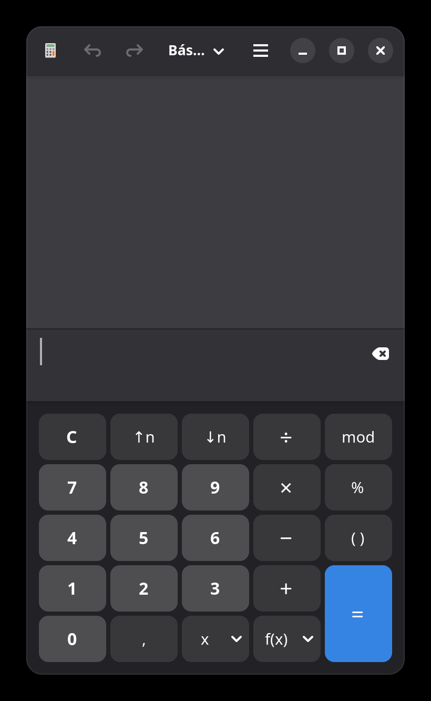
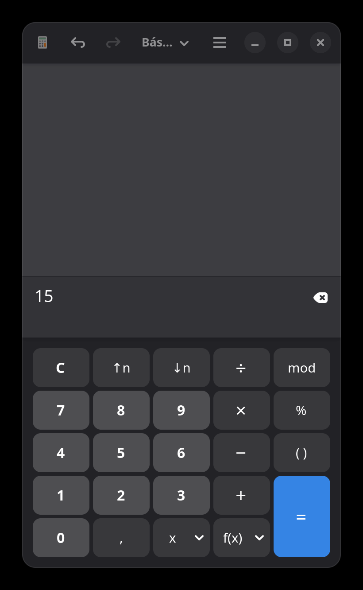
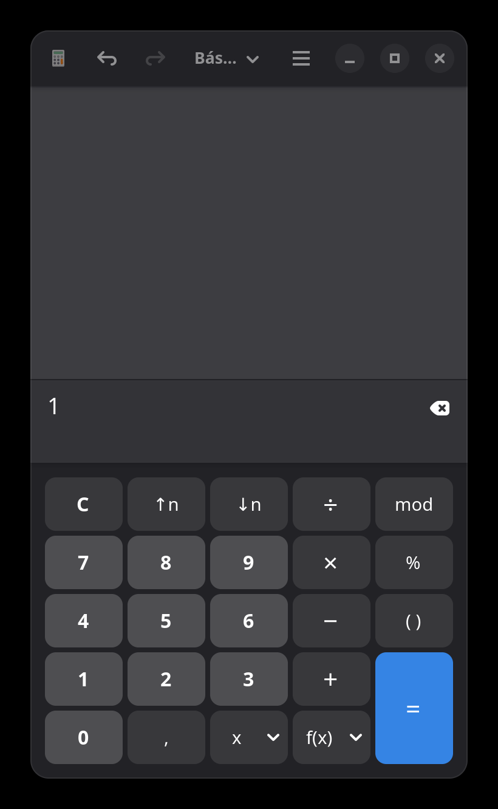
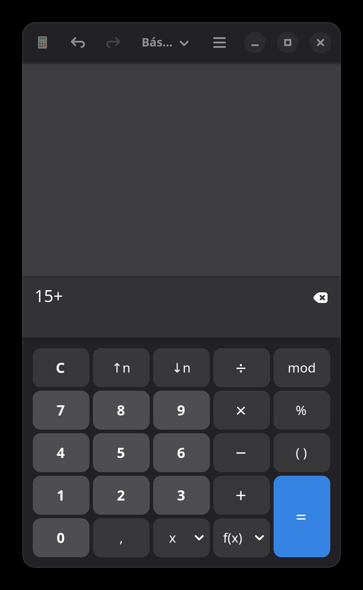
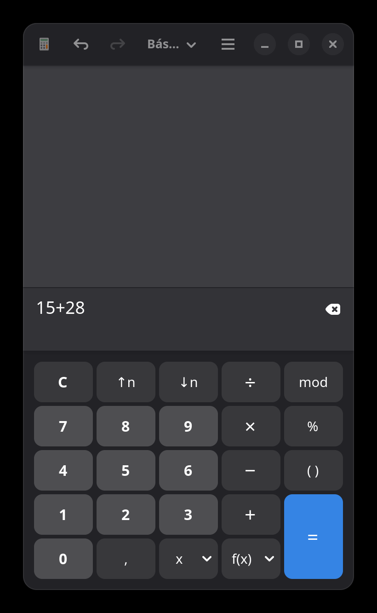
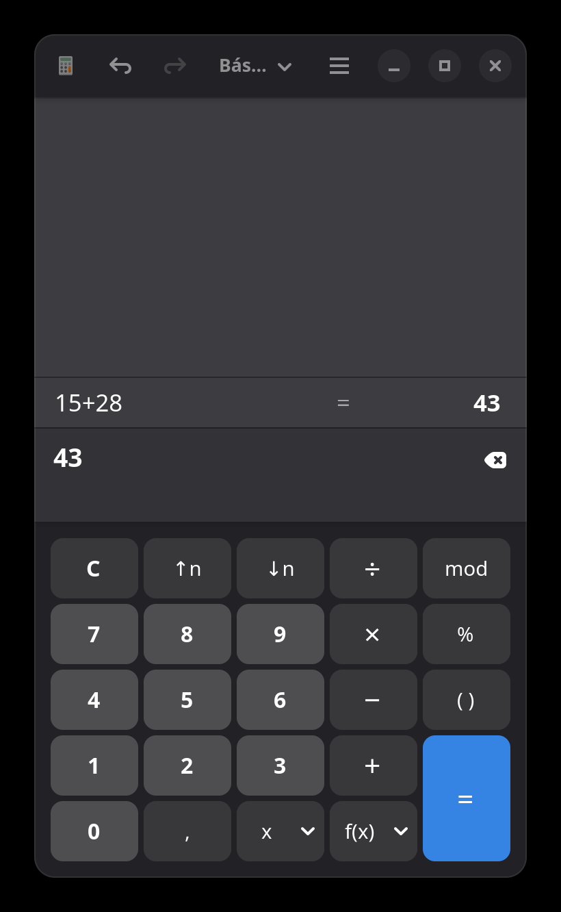

| Campo | Valor |
|---|---|
| Aplicación | GNOME Calculator |
| Versión | 50.0 |
| Sistema operativo | Linux (GNOME) |
| Módulo | Suma (modo Básico) |
| Fecha | 14 de octubre de 2026 |
Este manual explica paso a paso cómo utilizar la función de suma en la aplicación Calculadora de GNOME (versión 50.0), en su modo Básico. El objetivo es permitir a cualquier persona realizar sumas simples de dos o más números enteros o decimales.
Personas usuarias sin conocimientos técnicos avanzados que necesiten realizar operaciones aritméticas básicas en un entorno de escritorio GNOME.
Este documento cubre exclusivamente la operación de suma en el modo Básico de la calculadora. No se incluyen otros modos (Scientific, Financial, Programming, Templates), otras operaciones (resta, multiplicación, división) ni funciones avanzadas.
La aplicación puede iniciarse de varias formas:
gnome-calculator.gnome-calculator &.
Al abrir la calculadora en modo Básico, la interfaz presenta las siguientes zonas:
| Elemento | Descripción |
|---|---|
| Icono de calculadora | Identificador visual de la aplicación. |
| Flechas Deshacer / Rehacer | Permiten revertir o restaurar la última acción. |
| Selector de modo | Muestra el modo actual (ej. "Bás..." abreviatura de "Básico"). Permite cambiar entre modos. |
| Menú principal | Botón con tres líneas horizontales (icono hamburguesa). Accede a opciones adicionales de la aplicación. |
| Controles de ventana | Minimizar, Maximizar y Cerrar. |
| Elemento | Descripción |
|---|---|
| Display principal | Zona gris superior que muestra el resultado y el historial de la operación. |
| Campo de entrada | Barra oscura debajo del display que muestra la expresión actual (números y operadores ingresados). A la derecha incluye un botón de borrado (icono de retroceso). |
El teclado se organiza en una cuadrícula de botones:
| Fila | Botones |
|---|---|
| Fila 1 | C (Borrar todo), ↑n, ↓n, ÷ (dividir), mod |
| Fila 2 | 7, 8, 9, × (multiplicar), % (porcentaje) |
| Fila 3 | 4, 5, 6, − (restar), ( ) (paréntesis) |
| Fila 4 | 1, 2, 3, + (sumar) |
| Fila 5 | 0, , (coma decimal), x (variable), f(x) (funciones) |
| Columna derecha | = (igual) — botón azul grande que ocupa dos filas de altura. |

A continuación se detalla el procedimiento paso a paso para sumar dos números.
C para reiniciar.
1 y luego 5. El campo de entrada mostrará 15.

+ (suma), ubicado en la cuarta fila del teclado, en la columna de operadores (tercera columna desde la derecha).+ se añadirá al campo de entrada, justo después del primer número.+ (ej. 15+).

15+.2 y luego 8. El campo de entrada mostrará 15+28.

15+28.= (igual), el botón azul grande ubicado en la esquina inferior derecha del teclado.15+28 = 43 y el campo de entrada muestra 43.

15+28 = 43.A continuación se resume el flujo completo en una sola tabla:
| Paso | Acción | Campo de entrada | Display principal |
|---|---|---|---|
| 1 | Abrir calculadora | (vacío) | (vacío) |
| 2 | Pulsar 1 | 1 | (vacío) |
| 3 | Pulsar 5 | 15 | (vacío) |
| 4 | Pulsar + | 15+ | (vacío) |
| 5 | Pulsar 2 | 15+2 | (vacío) |
| 6 | Pulsar 8 | 15+28 | (vacío) |
| 7 | Pulsar = | 43 | 15+28 = 43 |
La calculadora permite realizar sumas consecutivas sin presionar = intermedios:
10).+.20).+ nuevamente.5).=.El resultado será 35.
| Problema | Causa posible | Solución |
|---|---|---|
| La calculadora no se abre | La aplicación no está instalada o el proceso falló. | Verifique la instalación con gnome-calculator --version en la terminal. |
| El campo de entrada no muestra los dígitos | La entrega de interacción no se confirmó. | Intente hacer clic directamente en los botones numéricos. |
| El resultado no es correcto | Error de digitación o operador incorrecto. | Pulse el botón C para reiniciar y repita la operación. |
| No se visualiza el resultado | El display principal está oculto o la ventana necesita redimensionarse. | Redimensione la ventana de la calculadora o pulse el botón Maximizar. |
| Desea deshacer un error | Pulsó un dígito u operador incorrecto. | Use la flecha Deshacer en la barra superior para revertir el último paso. |
recursos/ junto a este documento.Fin del documento.